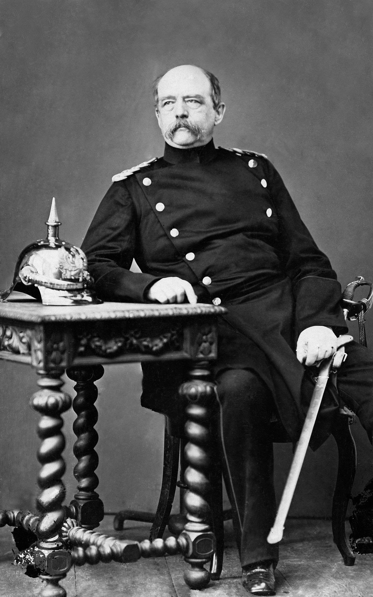

Cauzele izbucinirii Primului Război Mondial
La începutul secolului XX, Europa părea o oază de progres tehnologic și cultural, dar sub suprafața ei fremătau resentimente care transformau continentul într-un „butoi cu pulbere”. Războiul care a izbucnit în 1914 nu a fost accidentul unei singure scânteie, ci rezultatul unui proces istoric complex, în care patru forțe principale – militarismul, sistemul de alianțe, imperialismul și naționalismul – au creat o fuziune letală.
Militarismul: Cultul Armelor și Logica Războiului Preventiv
După 1871, Germania unificată sub conducerea Prusiei a devenit o superputere militară, dar și o națiune obsedată de securitate. Cancelarul Otto von Bismarck a construit o rețea de alianțe pentru a izola Franța, înfrântă în 1870. Totuși, abdicarea lui Wilhelm I și ascensiunea lui Wilhelm al II-lea (1888) au schimbat dinamica. Noua generație de lideri germani a respins diplomația subtilă a lui Bismarck, optând pentru o politică agresivă (Weltpolitik), menită să câștige „un loc la soare” printre imperii. Cursa înarmărilor a escaladat odată cu planul Schlieffen (1905), o strategie germană care prevedea un atac fulger împotriva Franței prin Belgia neutră, urmată de o întoarcere rapidă spre Rusia. Acest plan a făcut din mobilizare un act de război: orice întârziere în concentrarea trupelor putea fi fatală. În paralel, cursa navală anglo-germană (1906–1914) a transformat Marea Nordului într-un câmp de bătălie latent. Germania a construit dreadnought-uri pentru a concura cu hegemonia britanică, dar Regatul Unit a răspuns prin alianța cu Franța (Antenta Cordială, 1904) și Rusia. Militarismul nu a fost doar o afacere a Marilor Puteri. În Balcani, Serbia, încurajată de Rusia, și-a modernizat armata, visând la un „Mare Stat Sârb”. Acest vis a intrat în directă coliziune cu Austro-Ungaria, care controla Bosnia și Herțegovina.
